Last updated: 2026-03-10 (after full pipeline run with directional analysis and prompts-only)
To copy into Word or Google Docs: open this file in a web browser (from the project folder so images load), then Select All (Ctrl/Cmd+A) and Paste into your document.
Parameters: analysis_reference_date (see cohort metadata below); days_post_creation = 7.
super_agents; super_agent_run; super_agent_tools; agent_classifications (prompts scope: only agents in this table).
| Analysis | Scope |
|---|---|
| Success criteria, triggers, tools | All agents in super_agents.csv |
| Prompts (classifications) | Only agent_ids in agent_classifications.csv |
analysis_reference_date: '2026-03-10' days_post_creation: 7 segment_counts: dormant: 86437 failure: 30889 success: 39606 total_agents: 156932
| segment | agent_count |
|---|---|
| dormant | 86,437 |
| failure | 30,889 |
| success | 39,606 |
Reference date set in config (2026-03-10). TRIGGER_SOURCE may include \N (normalized to "unknown" where needed). RF and logistic models use resampled or full data; SHAP on a sample (e.g. 500 agents). Directional interpretation uses signed mean SHAP and logistic coefficients together.
Cohort distribution chart
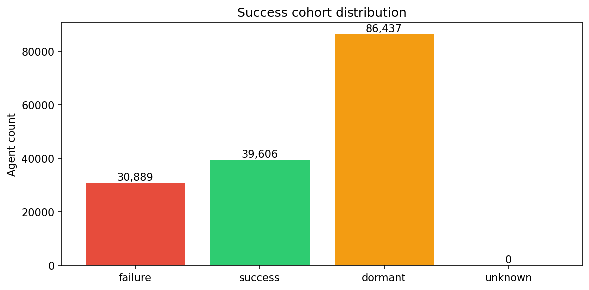
Commentary: Dormant agents (86,437) outnumber success (39,606) and failure (30,889) combined. Among agents with any usage (success + failure), success rate is ~56%. The large dormant segment indicates many agents are created but never used after the 7-day window—opportunity for activation and onboarding.
Recommended actions: Focus on converting dormant agents to first use (onboarding, discovery, scheduled nudges). Monitor failure segment for churn patterns; reinforce triggers and tools associated with success.
Trigger taxonomy (total runs by trigger)
| trigger_source | total_runs |
|---|---|
| automation | 1,242,456 |
| scheduled | 780,600 |
| dm | 630,075 |
| \N | 177,633 |
| introduction | 104,388 |
| task_comment_mention | 95,944 |
| assignment | 87,086 |
| mention | 23,497 |
| manual | 8,068 |
Trigger × segment (mean % per agent)
| trigger_source | dormant | failure | success |
|---|---|---|---|
| automation | 3.77 | 11.88 | 11.73 |
| scheduled | 2.48 | 20.30 | 48.80 |
| dm | 33.60 | 29.13 | 21.91 |
| \N | 16.15 | 8.70 | 5.81 |
| introduction | 40.52 | 23.03 | 5.31 |
| task_comment_mention | 1.69 | 3.07 | 3.07 |
| assignment | 1.06 | 1.53 | 1.82 |
| mention | 0.52 | 1.01 | 0.92 |
| manual | 0.20 | 1.34 | 0.62 |
Trigger SHAP direction (signed mean SHAP)
| feature | mean_shap | mean_abs_shap |
|---|---|---|
| introduction | 0.021 | 0.134 |
| scheduled | 0.016 | 0.130 |
| \N | -0.001 | 0.031 |
| dm | 0.000 | 0.026 |
| automation | -0.000 | 0.012 |
| task_comment_mention | 0.001 | 0.009 |
| assignment | ~0 | 0.003 |
| manual | -0.000 | 0.002 |
| mention | 0.000 | 0.001 |
Trigger logistic regression coefficients
| feature | coefficient |
|---|---|
| \N | -0.134 |
| assignment | 0.200 |
| automation | 0.535 |
| dm | 0.423 |
| introduction | -2.172 |
| manual | -0.012 |
| mention | 0.125 |
| scheduled | 1.587 |
| task_comment_mention | 0.265 |
Trigger by segment (chart)
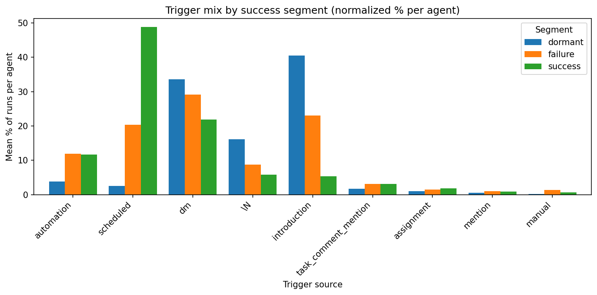
Trigger SHAP bar
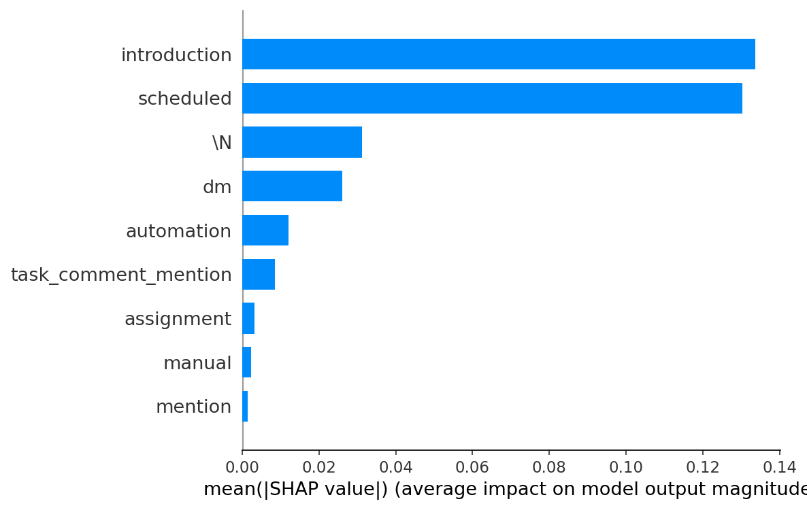
Trigger SHAP beeswarm
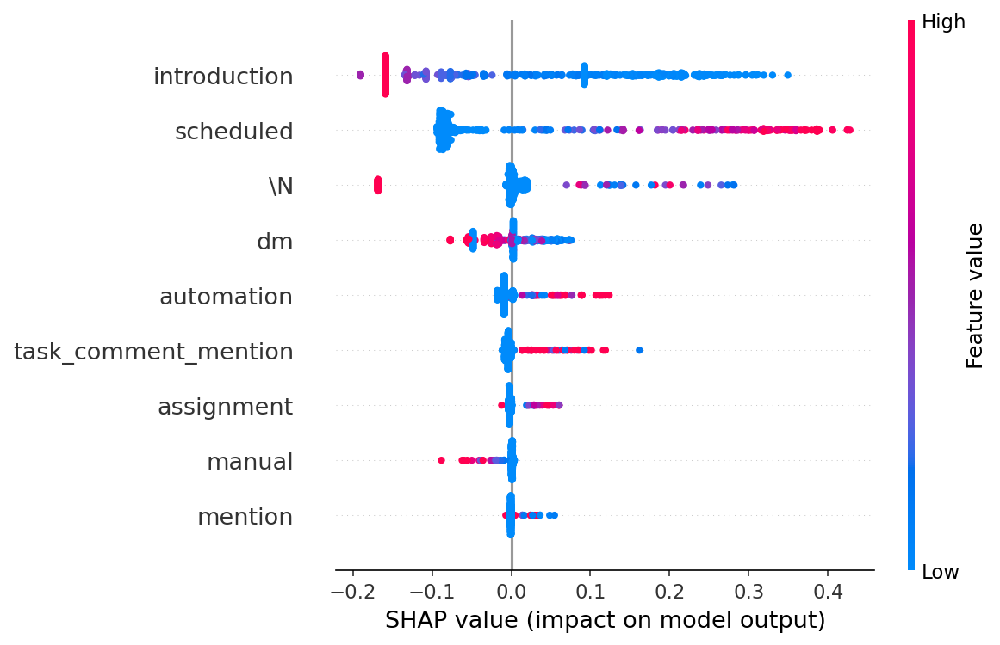
Commentary: Scheduled has the highest mean % among success agents (48.8%) vs dormant (2.5%) and failure (20.3%). RF importance (0.48) and positive logistic coefficient (+1.59) both indicate scheduled usage strongly pushes toward success. Introduction is dominant in dormant (40.5%) and failure (23.0%) and low in success (5.3%); logistic −2.17 shows introduction-heavy mix is associated with failure/dormant. dm and automation have moderate positive coefficients (+0.42, +0.53).
Recommended actions: Double down on scheduled triggers (recurring use) and reduce reliance on introduction as the primary driver. Encourage dm and automation where appropriate.
Tool taxonomy (top 15 by total calls)
| tool_name | total_calls |
|---|---|
| todo_write | 8,536,471 |
| load_assets | 1,233,334 |
| retrieve_tasks_by_filters | 1,198,671 |
| post_reply | 926,642 |
| update_task | 910,812 |
| post_task_comment | 729,663 |
| post_chat_message | 727,989 |
| load_custom_fields | 547,427 |
| search_workspace | 495,664 |
| retrieve_activity | 397,596 |
| read_memory | 339,381 |
| create_task | 294,068 |
| create_subtask | 234,867 |
| search_public_web | 197,106 |
| write_memory | 124,757 |
Tool cohort comparison (success vs failure, top 12 by significance)
| tool | mean_success | mean_failure | p_value |
|---|---|---|---|
| write_memory | 0.0285 | 0.0145 | 0.0 |
| view_tools_catalog | 0.0446 | 0.0282 | 0.0 |
| post_chat_message | 0.368 | 0.129 | 0.0 |
| post_reply | 0.364 | 0.322 | 0.0 |
| post_task_comment | 0.186 | 0.098 | 0.0 |
| read_memory | 0.150 | 0.045 | 0.0 |
| retrieve_activity | 0.242 | 0.083 | 0.0 |
| retrieve_chat_messages | 0.024 | 0.011 | 0.0 |
| load_custom_fields | 0.082 | 0.044 | 0.0 |
| create_task | 0.153 | 0.061 | 0.0 |
| retrieve_tasks_by_filters | 0.616 | 0.214 | 0.0 |
| todo_write | 3.15 | 1.19 | 0.0 |
Tool SHAP direction (top 12)
| feature | mean_shap | mean_abs_shap |
|---|---|---|
| read_memory | -0.010 | 0.084 |
| todo_write | -0.004 | 0.058 |
| post_reply | -0.006 | 0.052 |
| retrieve_tasks_by_filters | 0.002 | 0.028 |
| load_assets | ~0 | 0.020 |
| retrieve_activity | 0.001 | 0.017 |
| search_workspace | -0.000 | 0.016 |
| post_chat_message | -0.000 | 0.016 |
| post_task_comment | 0.000 | 0.009 |
| update_task | 0.000 | 0.004 |
| write_memory | 0.000 | 0.003 |
| view_tools_catalog | 0.001 | 0.003 |
Tool logistic coefficients (top 10 by |coef|)
| feature | coefficient |
|---|---|
| todo_write | 0.989 |
| post_reply | -0.462 |
| read_memory | 0.230 |
| retrieve_tasks_by_filters | 0.214 |
| complete_execution | 0.152 |
| post_chat_message | 0.116 |
| write_memory | 0.110 |
| edit_image | -0.120 |
| create_list | -0.081 |
| create_document | -0.094 |
Tool by segment (chart)
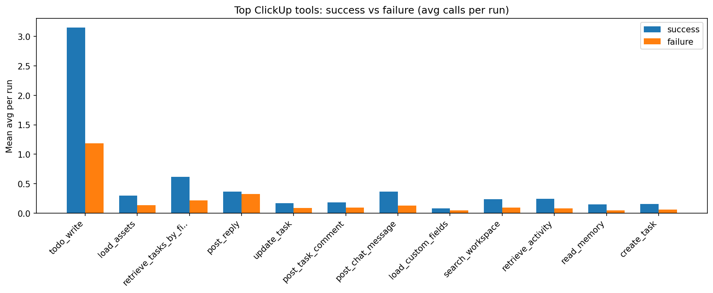
Tool SHAP bar
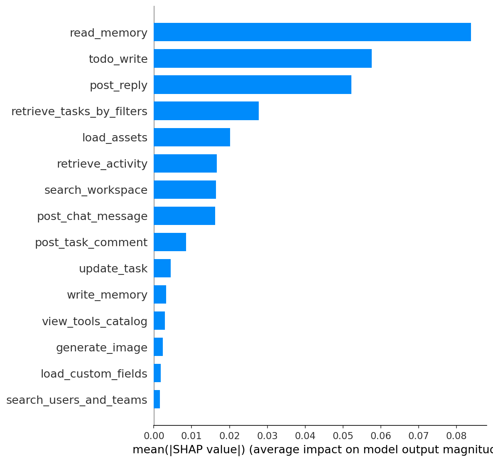
Tool SHAP beeswarm
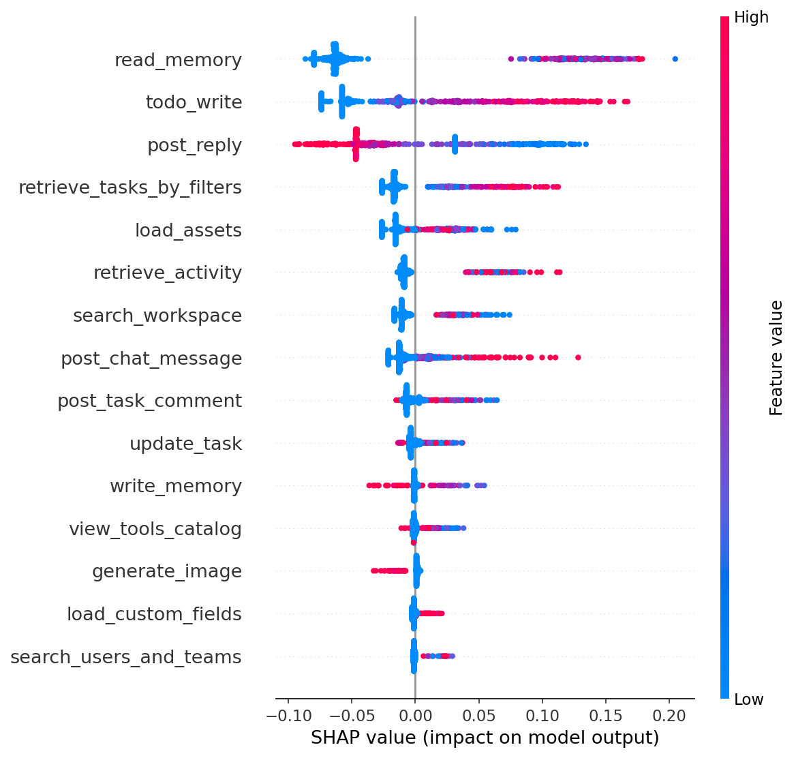
Commentary: Cohort comparison (Mann-Whitney): write_memory, view_tools_catalog, post_chat_message, post_reply, post_task_comment, read_memory, retrieve_activity, create_task have significantly higher mean usage in success than failure (p ≈ 0). RF importance: read_memory (0.24), todo_write (0.20), post_reply (0.11). Logistic: todo_write +0.99, post_reply −0.46, read_memory +0.23. Use cohort comparison and SHAP-by-value for "higher usage band → higher success."
Recommended actions: Promote read_memory, write_memory, retrieve_activity, create_task, post_chat_message, post_task_comment. Use SHAP beeswarm and tool_shap_by_value.csv to see how direction changes by usage level.
Classification coverage
| success_segment | count |
|---|---|
| dormant | 70,540 |
| success | 36,712 |
| failure | 6,611 |
Classification trigger by segment (counts)
| trigger_source | dormant | failure | success |
|---|---|---|---|
| \N | 13,056 | 1,157 | 1,666 |
| assignment | 577 | 84 | 559 |
| automation | 2,182 | 965 | 4,743 |
| dm | 26,170 | 1,332 | 7,492 |
| introduction | 23,275 | 521 | 237 |
| manual | 24 | 31 | 39 |
| mention | 237 | 45 | 213 |
| scheduled | 646 | 1,762 | 20,722 |
| task_comment_mention | 924 | 146 | 1,041 |
| unknown | 3,449 | 568 | 0 |
Classification template by segment
| TEMPLATE_TYPE | dormant | failure | success |
|---|---|---|---|
| custom | 67,091 | 6,043 | 36,712 |
| unknown | 3,449 | 568 | 0 |
Classification RF importance (full model, top 15)
| feature | importance |
|---|---|
| trigger=scheduled | 0.349 |
| trigger=introduction | 0.122 |
| functional_archetype=creator | 0.070 |
| execution_dataset=collection_scoped | 0.069 |
| trigger=\N | 0.047 |
| trigger=dm | 0.036 |
| functional_archetype=monitor | 0.033 |
| trigger=automation | 0.031 |
| data_flow_direction=outbound | 0.022 |
| execution_dataset=single_user_prompt | 0.021 |
| domain_industry_vertical=creative_design | 0.020 |
| output_modality=visual_image | 0.016 |
| execution_dataset=collection_unbounded | 0.014 |
| template=unknown | 0.012 |
| template=custom | 0.011 |
Classification SHAP direction (full model, top 12)
| feature | mean_shap | mean_abs_shap |
|---|---|---|
| trigger=scheduled | -0.004 | 0.116 |
| trigger=introduction | 0.005 | 0.064 |
| execution_dataset=collection_scoped | -0.004 | 0.025 |
| functional_archetype=creator | 0.002 | 0.025 |
| trigger=\N | -0.000 | 0.024 |
| trigger=automation | 0.000 | 0.018 |
| trigger=dm | -0.002 | 0.012 |
| execution_dataset=single_user_prompt | -0.000 | 0.010 |
| functional_archetype=monitor | 0.000 | 0.008 |
| domain_industry_vertical=creative_design | 0.002 | 0.008 |
| output_modality=visual_image | 0.001 | 0.007 |
| template=unknown | 0.001 | 0.007 |
Operational scope × success rate
| operational_scope | dormant | failure | success | success_rate |
|---|---|---|---|---|
| branching_workflow | 42,705 | 4,002 | 23,223 | 0.33 |
| multi_workflow_orchestration | 3,503 | 820 | 6,095 | 0.59 |
| sequential_workflow | 23,841 | 1,742 | 7,228 | 0.22 |
| single_action | 377 | 30 | 97 | 0.19 |
| unknown | 114 | 17 | 69 | 0.34 |
Classification SHAP bar
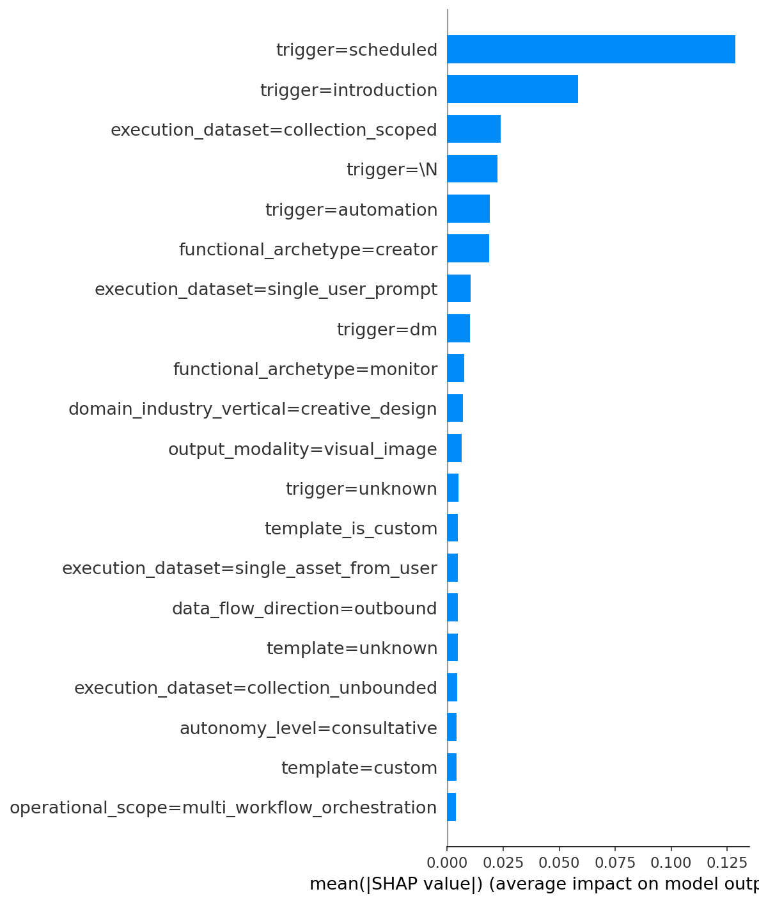
Classification SHAP beeswarm
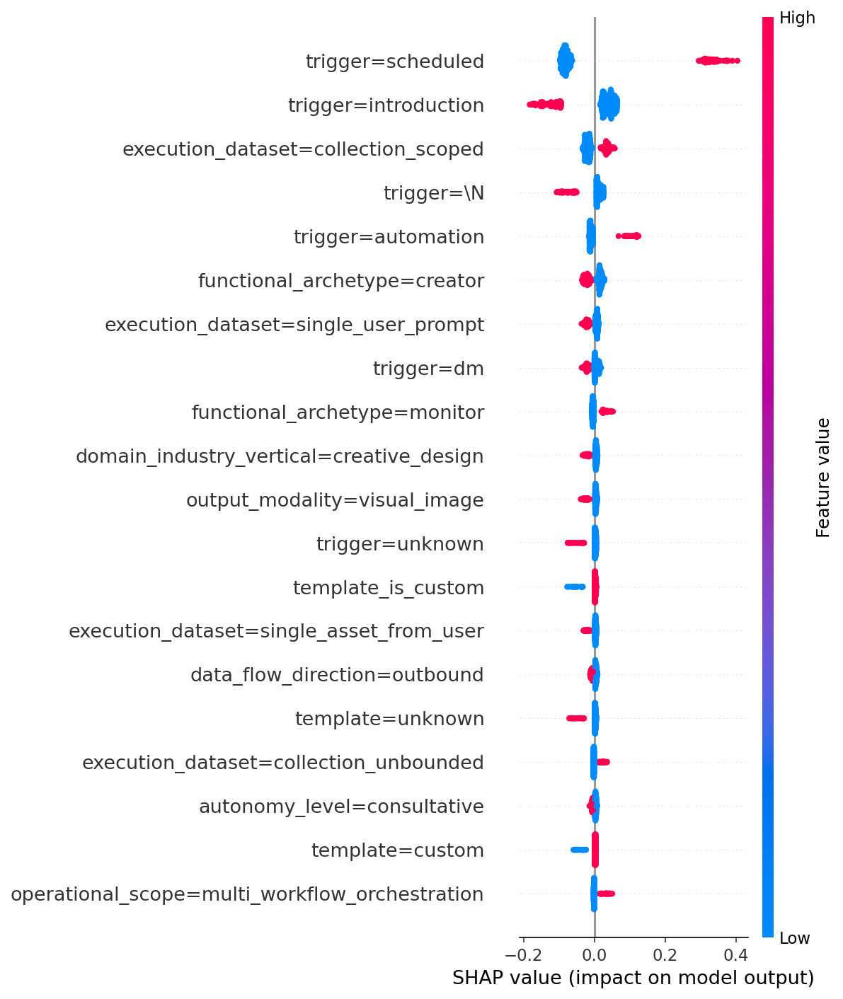
Success rate by operational_scope (chart)
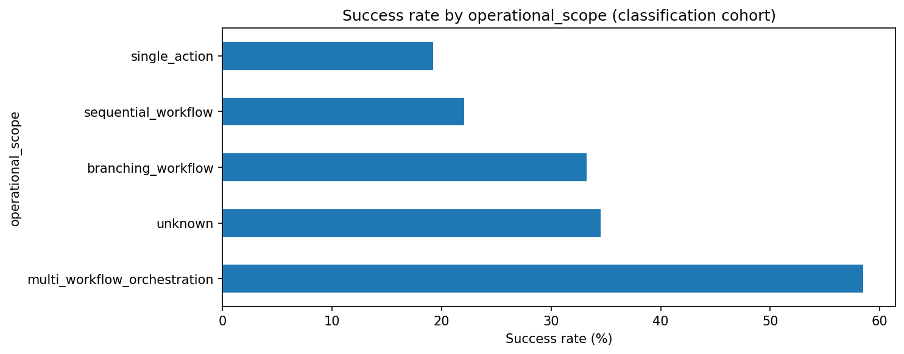
Commentary (full model): Trigger and template dominate (scheduled +1.25, introduction −1.21; template=custom +0.56). Classification dimensions: functional_archetype=creator/monitor, execution_dataset=collection_scoped, data_flow_direction=outbound, output_modality=visual_image have notable importance. operational_scope: multi_workflow_orchestration has highest success rate (~58.5%).
Recommended actions: Prioritize scheduled trigger and custom template. See §5.5 Prompts-only for dedicated section (no trigger/template).
Model uses only one-hot encoded classification dimensions (LLM-derived prompt dimensions). No trigger or template features. Same cohort (113,863 classified agents).
Prompts-only RF importance (top 12)
| feature | importance |
|---|---|
| execution_dataset=collection_scoped | 0.174 |
| functional_archetype=creator | 0.134 |
| functional_archetype=monitor | 0.090 |
| execution_dataset=single_user_prompt | 0.069 |
| execution_dataset=collection_unbounded | 0.047 |
| data_flow_direction=outbound | 0.041 |
| output_modality=visual_image | 0.036 |
| domain_industry_vertical=creative_design | 0.035 |
| operational_scope=multi_workflow_orchestration | 0.034 |
| execution_dataset=single_event_data | 0.031 |
| execution_dataset=single_asset_from_user | 0.027 |
| domain_industry_vertical=project_management_ops | 0.027 |
Prompts-only SHAP bar
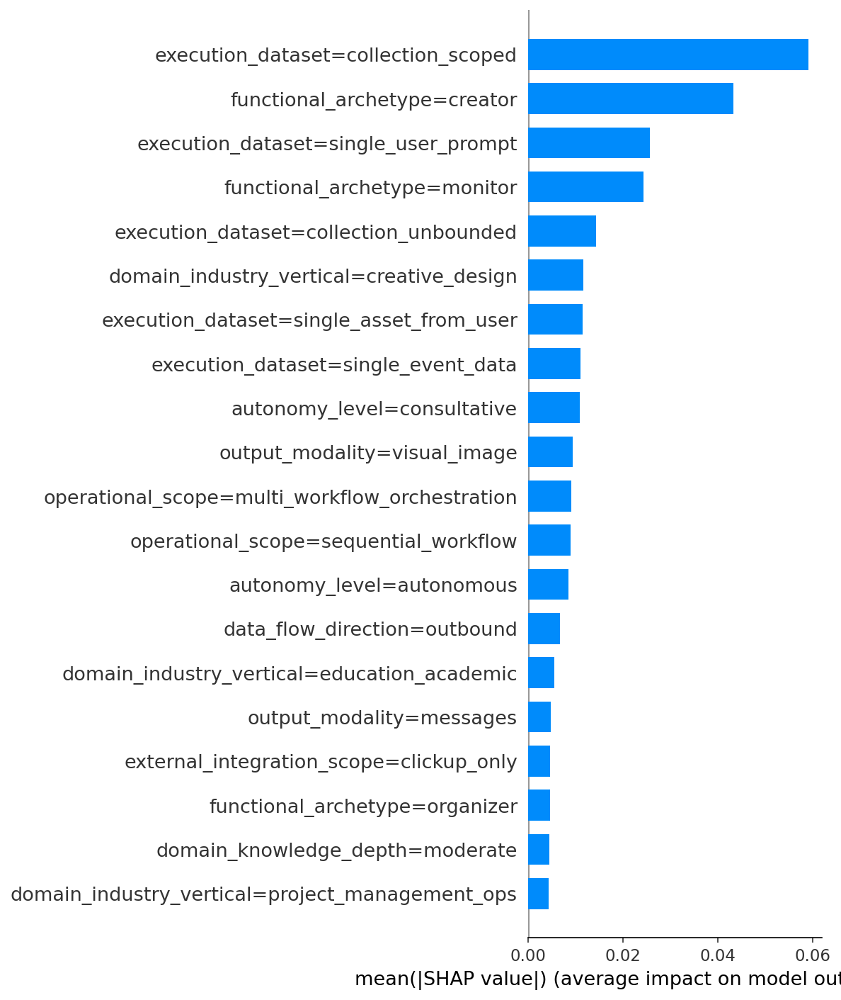
Prompts-only SHAP beeswarm

Commentary: Top importance: execution_dataset=collection_scoped (0.17), functional_archetype=creator (0.13), monitor (0.09). Prompt design (execution scope, archetype, data flow, modality) carries signal for success when trigger and template are excluded. Logistic (prompts-only): creative_design and consultative autonomy negative; project_management_ops, finance_accounting, personal_productivity positive.
Recommended actions: Use prompts-only outputs to iterate on classification dimensions without conflating with trigger/template. Compare with full model (§5.4).
All paths above are relative to the project folder. Open this HTML file from the project directory (e.g. docs/agent_success_retention_readout_plain.html) so that image paths ../analysis/output/*.png resolve. Then Select All and Paste into Word or Google Docs to retain tables and images.